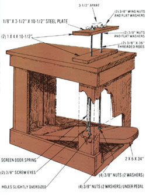

Nonreturnable beverage cans are a blight on the land! But the metal they contain is also a valuable resource . . . and a source of income for many people. In the paragraphs that follow, Bill Carr describes a device that can help recycle throwaway containers by making them easier to handle. However, before you give Bill's device a try, heed a word of warning from MOTHER: Fingers, as well as cans, could be slammed in this compactor! Therefore, we recommend that you never let a child use it without close supervision . . . and then only after you're sure that he or she understands and practices appropriate safety procedures.
When our 70-pound boy up and collected several hundred pounds of discarded aluminum cans, we were faced with a problem. How I wondered would we store the heap of containers until we could get to a recycling center? Well, my son Jim and I tried various ways of compacting the metal money makers the between-the-hands crush, the hammer and anvil smash, and the concentrated footstomp among others but all those techniques turned out to require greater strength and weight than Jim could muster. We needed a more convenient method . . . and hoped to find one that would be fun for Jim as well as effective.
Then a friend came up with the basic idea that I developed into what I call the One-Step, Three-Can Slam . . . an easily made machine that can be used by children or adults to crush cans to a 3/4" thickness for efficient storage and transport.
My design incorporates a small (Jimmy sized) workbench at one end, but the working parts could just as well fit into a table, bar, bench, or box. I'm sure that MOTHER's readers will be able to look at the accompanying illustration and make their own slammers . . . to help remove litter from the highways and put cash in their pockets!
|
 |
|
|